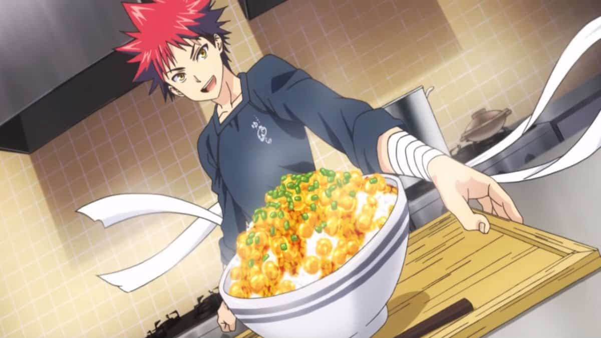

Paneer Sabzi

About Paneer Sabzi
Simple paneer sabji made with soft paneer cubes cooked in basic onion tomato masala and minimum spices.
If you are a regular reader of my blog you should be knowing that my family is full of paneer lovers
and I end up making at least one variety of paneer recipe atleast in a week.
Ingrediants
- 250 g paneer cubes
- 3 tbsp oil
- ½ tsp cumin seeds
- 2 onion
- 3 tomatoes paste
- 1 small capsicum
- 1 tsp ginger garlic paste
- ¾ tsp salt
- ¾ tsp chilli powder
- ½ tsp coriander powder
- ¼ tsp garam masala
- Coriander leaves
Steps to make
- Heat oil in a pan, add cumin seeds and let them pop.
- Add chopped onions and saute them well.
- Fry onions for five minutes until they become brown and soft. Now add capsicum and mix.
- Put ginger garlic paste and saute well to remove the raw smell.
- Add ground tomato paste and cook well until oil released from the masala.
- Now put chilli powder and coriander powder.
- Pour some water to cook the masala.
- Also, add the required salt for the sabji.
- Put paneer cubes and mix well with some water to cook the sabji.
- Finally, add some garam masala, mix well and garnish with coriander leaves.
- Switch off and serve with hot chapati or Ghee pulav.
Return to main page